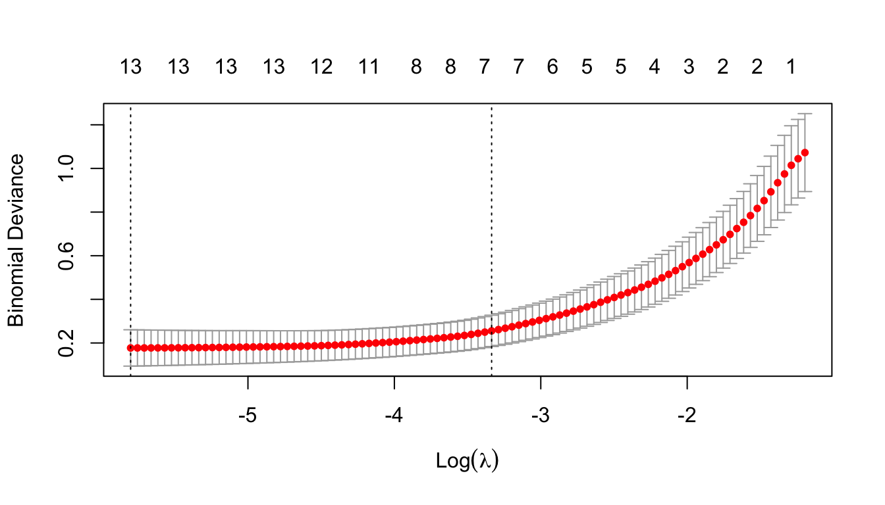

library(quanteda)
library(rsample)
library(tidyverse)
library(gt)1 Mosteller & Wallace
We going to (mostly) replicate a famous classification task that was first done by Frederick Mosteller and David L. Wallace in the early 1960s (1963). They undertook this task without the benefit of modern text processing. It was truly a pioneering work of computational linguistics and information theory. Keep that in mind and we do in minutes what took them months.
1.1 Variables
Because of computational limits, they needed to identify potentially productive variables ahead of building their regression model. This is not how we would go about it now, but it was a constraint at the time. They ended up creating 6 bins of likely words, and those are reported in 3 groupings in their study.
Their first group contains 70 tokens…
mw_group1 <- c("a", "all", "also", "an", "and", "any", "are", "as", "at", "be", "been", "but", "by", "can", "do", "down", "even", "every", "for", "from", "had", "has", "have", "her", "his", "if", "in", "into", "is", "it", "its", "may", "more", "must", "my", "no", "not", "now", "of", "on", "one", "only", "or", "our", "shall", "should", "so", "some", "such", "than", "that", "the", "their", "then", "there", "things", "this", "to", "up", "upon", "was", "were", "what", "when", "which", "who", "will", "with", "would", "your")Their second an additional 47…
mw_group2 <- c("affect", "again", "although", "among", "another", "because", "between", "both", "city", "commonly", "consequently", "considerable", "contribute", "defensive", "destruction", "did", "direction", "disgracing", "either", "enough", "fortune", "function", "himself", "innovation", "join", "language", "most", "nor", "offensive", "often", "pass", "perhaps", "rapid", "same", "second", "still", "those", "throughout", "under", "vigor", "violate", "violence", "voice", "where", "whether", "while", "whilst")And their third another 48 (though they identify some by lemmas and another “expence” doesn’t appear in our data, possibly because of later editing done in our particular edition)…
mw_group3 <- c("about", "according", "adversaries", "after", "aid", "always", "apt", "asserted", "before", "being", "better", "care", "choice", "common", "danger", "decide", "decides", "decided", "deciding", "degree", "during", "expense", "expenses", "extent", "follow", "follows", "followed", "following", "i", "imagine", "imagined", "intrust", "intrusted", "intrusting","kind", "large", "likely", "matter", "matters", "moreover", "necessary", "necessity", "necessities", "others", "particularly", "principle", "probability", "proper", "propriety", "provision", "provisions", "requisite", "substance", "they", "though", "truth", "truths", "us", "usage", "usages", "we", "work", "works")All together, they list 165 candidate variables, though it works out to be 180 unlemmatized tokens as potential variables for their model.
We’ll concatenate a vector of all their variables into a single vector.
mw_all <- sort(c(mw_group1, mw_group2, mw_group3))1.2 The Federalist Papers
For their task, Mosteller & Wallace were interested in solving a long-standing historical debate about the disputed authorship of 12 of the Federalist Papers.
The Federalist Papers are made up of 85 articles and essays written by Alexander Hamilton, James Madison, and John Jay under the pseudonym “Publius” to promote the ratification of the United States Constitution.
Authorship of the articles has been disputed since their publication, with Hamilton providing a list to his lawyer before his death, and Madison another disputed some of Hamilton’s claims.
We’re going to work from the generally accepted authorship designations, which assign authorship of 51 articles to Hamilton, 14 to Madison, 5 to Jay, and 3 to joint authorship. The other 12 are in doubt as to whether they were written by Hamilton or Madison.
So let’s begin. First, we’ll get the metadata.
load("../data/federalist_meta.rda")
load("../data/federalist_papers.rda")fed_meta <- federalist_meta %>%
dplyr::select(doc_id, author_id)And we’re going to read in ALL of the data. Why do it this way? We could build out separate data sets for training, validating, and predicting. HOWEVER, we need our data to be identical in structure at every step. This can become tedious if you’re forever wrangling data.frames to get them as the need to be. It’s much easier to begin with one dfm and subset as necessary for the classification process.
So let’s read in the text.
fed_txt <- federalist_papers1.3 Preparing the Data
Now, we’ll tokenize the data.
fed_tokens <- fed_txt %>%
corpus() %>%
tokens(remove_punct = T, remove_symbols = T, what = "word")And create a weighted dfm. The 3rd line preps the column so it can be merged with our metadata. The 4th orders the tokens by their mean frequencies. This isn’t necessary here, but can be useful when doing quick sub-setting of variables. And the 5th changes the column name for easy joining.
fed_dfm <- fed_tokens %>% dfm() %>% dfm_weight(scheme = "prop") %>%
convert(to = "data.frame") %>%
select(doc_id, names(sort(colMeans(.[,-1]), decreasing = TRUE)))Now let’s join the author_id from the metadata.
fed_dfm <- fed_dfm %>%
right_join(fed_meta) %>%
dplyr::select(doc_id, author_id, everything()) %>%
as_tibble()1.3.1 Training and testing data
Now we can subset out our training and testing data.
train_dfm <- fed_dfm %>% filter(author_id == "Hamilton" | author_id == "Madison")
test_dfm <- fed_dfm %>% filter(author_id == "Disputed")For the next step we’re going to again separate our training data. We want a subset of known data against which we can validate our model.
For this, we’ll use some handy functions from the rsample package. First, we make an 80/20 split. From that we create a new, smaller training set, and a validation set.
set.seed(123)
valid_split <- initial_split(train_dfm, .8)
train_dfm_v2 <- analysis(valid_split)
train_valid <- assessment(valid_split)Next, we’ll select only those 70 tokens from Mosteller & Wallace’s first group. We also need to convert the author_id into a 2-level factor, and to move the text_id to row names. The same for the validation data, but we don’t need to worry about the factor conversion.
train_dfm_v2_1 <- train_dfm_v2 %>%
dplyr::select(doc_id, author_id, all_of(mw_group1)) %>%
mutate(doc_id = factor(doc_id)) %>%
column_to_rownames("doc_id")
train_valid_1 <- train_valid %>%
dplyr::select(doc_id, author_id, all_of(mw_group1)) %>%
column_to_rownames("doc_id")1.4 Lasso
For our regression, we’re going to take advantage of lasso regression. This is a form of penalized logistic regression, which imposes a penalty to the logistic model for having too many variables. This results in shrinking the coefficients of the less contributive variables toward zero. This is also known as regularization.
For this, we’ll use the glmnet package.
library(glmnet)1.4.1 Ridge & lasso regression
Least squares fits a model by minimizing the sum of squared residuals.
\[RSS = \sum_{i=1}^{n}(y_{i}-\beta_0-\sum_{j=1}^{p}\beta_jx_ij)^2\]
Ridge Regression is similar, but it includes another term.
\[\sum_{i=1}^{n}(y_{i}-\beta_0-\sum_{j=1}^{p}\beta_jx_ij)^2 + \lambda \sum_{j=1}^{p}\beta_{j}^{2} = RSS + \lambda \sum_{j=1}^{p}\beta_{j}^{2}\]
In order to minimize this equation \(\beta_1,...\beta_p\) should be close to zero and so it shrinks the coefficients. The tuning parameter, \(\lambda\), controls the impact.
Ridge regression does have some disadvantages.
- Unlike subset selection, ridge regression includes all p predictors.
- The penalty term will shrink all of the coefficients towards zero, but none of them will be exactly zero.
- Such a large model often makes interpretation difficult.
The lasso helps overcome these problems. It is similar to ridge regression, but the penalty term is slightly different.
\[\sum_{i=1}^{n}(y_{i}-\beta_0-\sum_{j=1}^{p}\beta_jx_ij)^2 + \lambda \sum_{j=1}^{p}|\beta_{j}| = RSS + \lambda \sum_{j=1}^{p}|\beta_{j}|\]
Like ridge regression it shrinks the coefficients towards zero. However, the lasso allows some of the coefficients to be exactly zero.
For more detail on lasso regression you can look here:
This is a very useful technique for variable selection and can reduce the likelihood of overfitting. This is particularly helpful in linguistic analysis where we’re often working with many variables making the implementation of functions like step() sometimes tedious.
1.4.2 Using glmnet
To help you decide which lambda to use, the cv.glmnet() function does cross-validation. The default sets alpha=1 for lasso. If we wanted ridge, we would set alpha=0.
cv_fit <- cv.glmnet(as.matrix(train_dfm_v2_1[, -1]), train_dfm_v2_1[, 1], family = "binomial")We can plot the log of the resulting lambdas.
plot(cv_fit)
The plot displays the cross-validation error according to the log of lambda. The left dashed vertical line indicates that the log of the optimal value of lambda is approximately -6, which is the one that minimizes the prediction error. This lambda value will give the most accurate model.
The exact value of lambda can also be viewed. We’ll save our regression coefficients.
lambda_min <- cv_fit$lambda.min
lambda_lse <- cv_fit$lambda.1seBy filtering those variables with coefficients of zero, we see only the variables have been included in the model. Ours has 13.
coef(cv_fit, s = "lambda.min") |>
as.matrix() |>
data.frame() |>
rownames_to_column("Variable") |>
filter(s1 !=0) |>
dplyr::rename(Coeff = s1) |>
gt() |>
fmt_number(columns = "Coeff",
decimals = 2)| Variable | Coeff |
|---|---|
| (Intercept) | 5.16 |
| and | 109.28 |
| at | −423.42 |
| by | 273.33 |
| into | 180.70 |
| is | 25.16 |
| no | 236.10 |
| of | −40.02 |
| on | 176.93 |
| there | −1,205.46 |
| this | −152.95 |
| to | −137.28 |
| up | −208.23 |
| upon | −1,218.02 |
1.5 Validate the model
To validate the model, let’s create a model matrix from the texts we’ve split off for that purpose.
x_test <- model.matrix(author_id ~., train_valid_1)[,-1]From our model, we’ll predict the author_id of the validation set.
lasso_prob <- predict(cv_fit, newx = x_test, s = lambda_lse, type = "response")From the probabilities, we can return the predicted authors.
lasso_predict <- ifelse(lasso_prob > 0.5, "Madison", "Hamilton")Code
lasso_predict |>
data.frame() |>
dplyr::rename(Predict = s1) |>
tibble::rownames_to_column("Test") |>
gt()| Test | Predict |
|---|---|
| FEDERALIST_08 | Hamilton |
| FEDERALIST_27 | Hamilton |
| FEDERALIST_29 | Hamilton |
| FEDERALIST_31 | Hamilton |
| FEDERALIST_37 | Madison |
| FEDERALIST_45 | Madison |
| FEDERALIST_47 | Madison |
| FEDERALIST_65 | Hamilton |
| FEDERALIST_66 | Hamilton |
| FEDERALIST_73 | Hamilton |
| FEDERALIST_76 | Hamilton |
| FEDERALIST_77 | Hamilton |
| FEDERALIST_81 | Hamilton |
Retrieve what they actually are and calculate our model accuracy.
table(pred=lasso_predict, true=train_valid_1$author_id) true
pred Hamilton Madison
Hamilton 10 0
Madison 0 3paste0(mean(lasso_predict == train_valid_1$author_id)*100, "%")[1] "100%"Ours is 100% accurate. Not bad. Note that if you wanted to really test the model, we could create a function to run through this process starting with the sampling.That way, we could generate a range of accuracy over repeated sampling of training and validation data.
1.6 Mosteller & Wallace’s Experiment
Let’s repeat the process, but this time we’ll start with all of Mosteller & Wallace’s candidate variables.
1.6.1 Create a new training and validation set
train_dfm_v2_2 <- train_dfm_v2 %>%
dplyr::select(doc_id, author_id, all_of(mw_all)) %>%
mutate(author_id = factor(author_id)) %>%
column_to_rownames("doc_id")
train_valid_2 <- train_valid %>%
dplyr::select(doc_id, author_id, all_of(mw_all)) %>%
column_to_rownames("doc_id")1.6.2 Carry out cross-validation
cv_fit <- cv.glmnet(as.matrix(train_dfm_v2_2[, -1]), train_dfm_v2_2[, 1], family = "binomial")Look at our coefficients… 17 this time…
coef(cv_fit, s = "lambda.min") |>
as.matrix() |>
data.frame() |>
rownames_to_column("Variable") |>
filter(s1 !=0) |>
dplyr::rename(Coeff = s1) |>
gt() |>
fmt_number(columns = "Coeff",
decimals = 2)| Variable | Coeff |
|---|---|
| (Intercept) | −7.01 |
| among | 81.37 |
| and | 113.93 |
| both | 631.34 |
| by | 308.59 |
| consequently | 691.28 |
| followed | 407.75 |
| kind | −441.51 |
| language | 1,001.80 |
| on | 287.74 |
| particularly | 1,406.99 |
| probability | −483.88 |
| there | −224.77 |
| to | −1.07 |
| upon | −1,503.67 |
| vigor | −1,770.60 |
| whilst | 4,871.85 |
| would | −22.64 |
Save our minimum lambda and our regression coefficients.
lambda_min <- cv_fit$lambda.min
lambda_lse <- cv_fit$lambda.1se1.6.3 Create a matrix from the validation set
x_test <- model.matrix(author_id ~., train_valid_2)[,-1]1.6.6 Check confusion matrix
table(pred=lasso_predict, true=train_valid_1$author_id) true
pred Hamilton Madison
Hamilton 10 0
Madison 0 3The model looks good… So let’s proceed with the data in question.
1.6.7 Prepare full training set
train_dfm <- train_dfm %>%
dplyr::select(doc_id, author_id, all_of(mw_all)) %>%
mutate(author_id = factor(author_id)) %>%
column_to_rownames("doc_id")1.6.8 Prepare test data
test_dfm <- test_dfm %>%
dplyr::select(doc_id, author_id, all_of(mw_all)) %>%
column_to_rownames("doc_id")1.6.9 Carry out cross-validation
cv_fit <- cv.glmnet(as.matrix(train_dfm[, -1]), train_dfm[, 1], family = "binomial")As we would expect, this is close to what we saw previously.
coef(cv_fit, s = "lambda.min") |>
as.matrix() |>
data.frame() |>
rownames_to_column("Variable") |>
filter(s1 !=0) |>
dplyr::rename(Coeff = s1) |>
gt() |>
fmt_number(columns = "Coeff",
decimals = 2)| Variable | Coeff |
|---|---|
| (Intercept) | −6.75 |
| although | 210.14 |
| among | 248.45 |
| and | 132.41 |
| both | 212.07 |
| by | 331.66 |
| followed | 831.92 |
| kind | −487.71 |
| language | 167.35 |
| on | 352.43 |
| particularly | 1,426.48 |
| there | −342.61 |
| to | −32.91 |
| up | −99.57 |
| upon | −1,112.23 |
| vigor | −1,555.14 |
| whilst | 5,136.21 |
| would | −52.19 |
1.6.10 Run lasso
lasso_fit <- glmnet(as.matrix(train_dfm[, -1]), train_dfm[, 1], alpha = 1, family = "binomial", lambda = cv_fit$lambda.min)1.6.12 Check results
data.frame(lasso_predict, lasso_prob) |>
dplyr::rename(Author = s1, Prob = s1.1) |>
gt() |>
fmt_number(columns = "Prob",
decimals = 2)| Author | Prob |
|---|---|
| Madison | 0.90 |
| Madison | 0.71 |
| Madison | 0.99 |
| Madison | 0.76 |
| Madison | 0.89 |
| Madison | 0.62 |
| Hamilton | 0.26 |
| Madison | 0.89 |
| Madison | 0.99 |
| Madison | 0.68 |
| Madison | 0.75 |
| Madison | 0.88 |
Our model predicts all but 55 were written by Madison. Our model is not particularly confident about that result. This hews pretty closely to Mosteller & Wallace’s findings, through they come down (sort of) on the side of Madison for 55. However, they also acknowledge that the evidence is weak and not very convincing.
It’s worth noting, too, that other studies using other techniques have suggested that 55 was authored by Hamilton. See, for example, here:
https://journals.plos.org/plosone/article?id=10.1371/journal.pone.0054998
Pause for Lab Set Question
Complete Tasks 1 and 2 in Lab Set 1.
1.7 Works cited
Mosteller, Frederick, and David L Wallace. 1963. “Inference in an Authorship Problem: A Comparative Study of Discrimination Methods Applied to the Authorship of the Disputed Federalist Papers.” Journal Article. Journal of the American Statistical Association 58 (302): 275–309. https://doi.org/10.1080/01621459.1963.10500849.